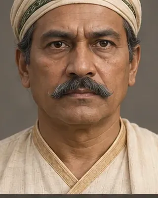

to 1805 · Rebel ruler of the Moran tracts

Ruled the Moran tracts from Bengmara. After fighting royalists in 1805 he accepted peace, became Barsenapati and governed the autonomous Matak kingdom.
Record confidence: medium.
Open interactive profile
1791
1805